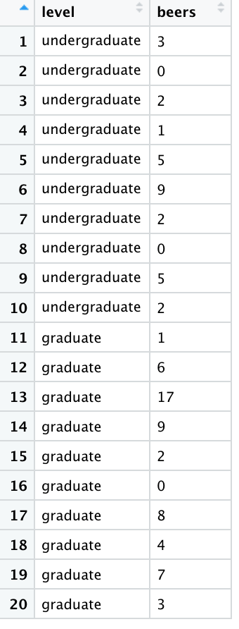
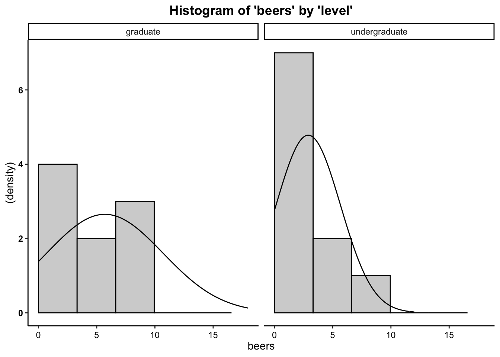
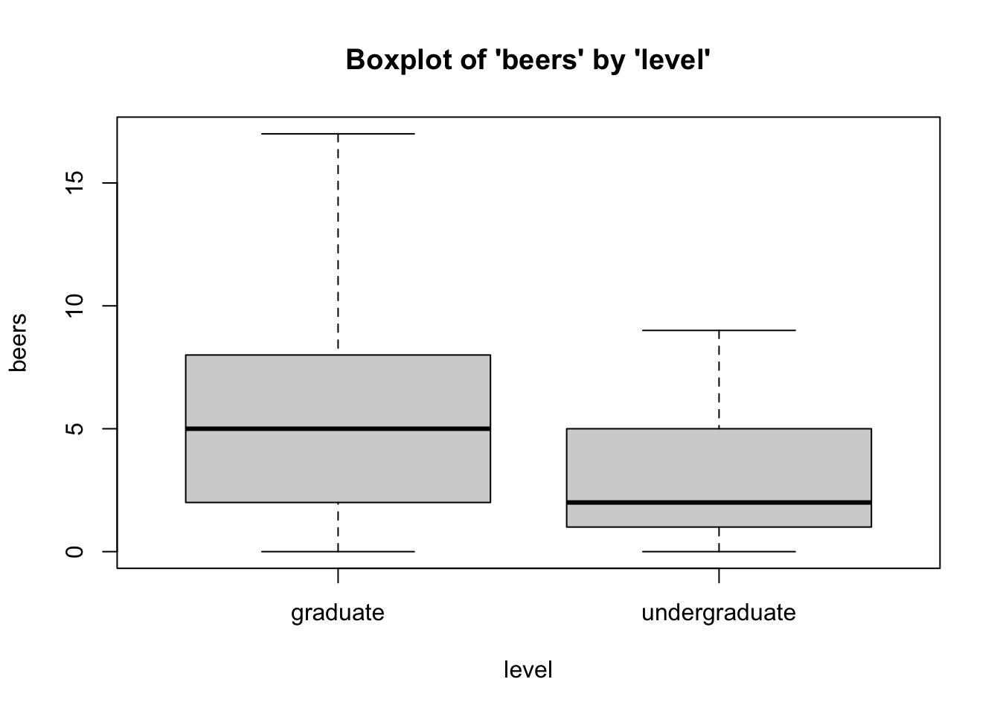
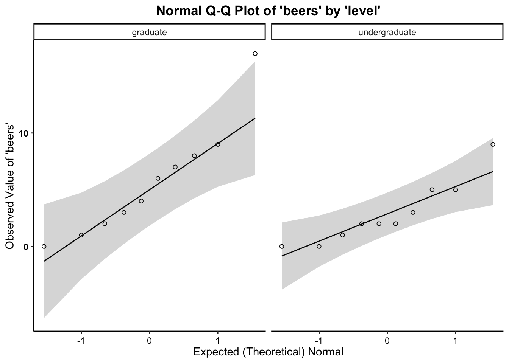

The independent samples t-test is a bivariate (two variable) test that examines the differences in means between two groups (no more, no less), in effort to see if the differences reflect true differences that we could expect to find in the population.
For this example, the t-test works perfectly because we have only two groups (undergraduate students and graduate students), and we’re examining each group’s mean number of beers in their home fridge to see if there is a true difference between “beers in fridge” amongst the population of undergraduate and graduate students.
In total, we have 10 undergraduate students and 10 graduate students in our sample. The data are as follows:
Undergrads: 3, 0, 2, 1, 5, 9, 2, 0, 5, 2
Grads: 1, 6, 17, 9, 2, 0, 8, 4, 7, 3.
As in the Intro to
R vignette, we can create an object out of a list of numbers using
the concatenate c
function.
Knowing that we have two variables: student level (ordinal independent/grouping variable – undergraduate versus graduate student) and number of beers (interval-ratio dependent variable), we have to read in the variables separately (listing the values for each observation). To do so, we can use the following code:
level <- c("undergraduate", "undergraduate", "undergraduate", "undergraduate", "undergraduate", "undergraduate", "undergraduate", "undergraduate", "undergraduate", "undergraduate", "graduate", "graduate", "graduate", "graduate", "graduate", "graduate", "graduate", "graduate", "graduate", "graduate")
beers <- c(3, 0, 2, 1, 5, 9, 2, 0, 5, 2, 1, 6, 17, 9, 2, 0, 8, 4, 7, 3)Where the first observation in level (student type) corresponds with
the number in the first observation of beers. For example, the first
observation in the list for level is an undergraduate, which corresponds
with the first observation in the beers list, of 3: This means the first
observation is an undergraduate who has 3 beers in their fridge at
home.
Next, to appropriately prepare the data for analysis using the
t-test, we have to merge the two lists, so that the t-test can compare
group membership (level or student type) to number of beers. To merge
the data, as in the Intro
to R vignette, we can use the data.frame function.
Now we can call the data…
## level beers
## 1 undergraduate 3
## 2 undergraduate 0
## 3 undergraduate 2
## 4 undergraduate 1
## 5 undergraduate 5
## 6 undergraduate 9
## 7 undergraduate 2
## 8 undergraduate 0
## 9 undergraduate 5
## 10 undergraduate 2
## 11 graduate 1
## 12 graduate 6
## 13 graduate 17
## 14 graduate 9
## 15 graduate 2
## 16 graduate 0
## 17 graduate 8
## 18 graduate 4
## 19 graduate 7
## 20 graduate 3… which should look like this in your Environment window…

The assumptions for a t-test are…
Groups are not related or dependent upon each other. Cases can’t be in more than one group. No ties between observations. Examine data collection strategy to see if there are linkages between observations.
Therefore, we meet the assumption of independence of observations.##
## Descriptive statistics by group
## group: graduate
## vars n mean sd median trimmed mad min max range skew kurtosis se
## X1 1 10 5.7 4.99 5 5 4.45 0 17 17 0.91 -0.06 1.58
## ------------------------------------------------------------------
## group: undergraduate
## vars n mean sd median trimmed mad min max range skew kurtosis se
## X1 1 10 2.9 2.77 2 2.5 2.22 0 9 9 0.89 -0.3 0.87we have met the assumption for equal sample sizes.
Moreover, when comparing the SD for both groups, there is not a ratio
larger than 3:1. For these data, the SDs for each group are 4.99 for
graduate students and 2.77 for undergraduate students (its only nearly a
2:1 ratio). Therefore,
we have met the assumption for homogeneity of variance.Plot the histogram for beers (Y variable) broken out by student type (levels of the X variable), overlaying a normal curve…

Boxplots also provide a visual representation of the normality of a distribution. The boxplot has a box, a line through the box, two whiskers on either end of the box, and sometimes dots/points outside the whiskers. Below, we get a sense of what each part of the boxplot represents…
To tell if a variable is normally-distrubted using the box-and-whisker plot, generally, we want to see that there is some distance between the box and the end of the whiskers, that the box isn’t pushed too close to either whisker, that the median line (dot) is near the center of the box, and that there aren’t many outliers (dots) on the outside of the whiskers.
To plot a boxplot of Beers, broken out by Student Type, we can do the following…

The quantile-quantile plot is a visual tool to help us figure out if the empirical distribution of our variable fits (or rather, comes from) a theoretical normal distribution.
We assess normality an break this plot out by a grouping variable.

Therefore, we meet the assumption of normality.The calculation for the t-Test is:
\(\frac{\bar{x}_1-\bar{x}_2}{\sqrt{\frac{SD_1^2}{n_1}+\frac{SD_2^2}{n_2}}}\)
where…
In addition, the degrees of freedom (\(df\)) for the test is…
\(df = n_1 + n_2 -2\) (aka \(df = N-2\))
To run the independent samples t-test in R, we use the t.test function.
For t-test, within the t.test function, the dependent
(interval-ratio level) variable is listed first and the independent
(discrete/categorical) variable is listed second.
If you meet the assumptions of the t-test, you can assume
equal variances, and therefore use the call var.equal=TRUE. If you violate
the assumptions, use the call var.equal=FALSE.
##
## Two Sample t-test
##
## data: data$beers by data$level
## t = 1.5518, df = 18, p-value = 0.1381
## alternative hypothesis: true difference in means between group graduate and group undergraduate is not equal to 0
## 95 percent confidence interval:
## -0.9907269 6.5907269
## sample estimates:
## mean in group graduate mean in group undergraduate
## 5.7 2.9In the output above, we see the t-obtained value (1.5518, or rather, \(\pm\) 1.5518), the degrees of freedom (18), and the p-value (0.1381, which is less than our set alpha level of .05).
To interpret the findings, we report the following information:
“Using an independent samples t-test, I reject/fail to reject the null hypothesis that there is no mean difference between group 1 and group 2, in the population, \(t(?) = ?, p ? .05\)”